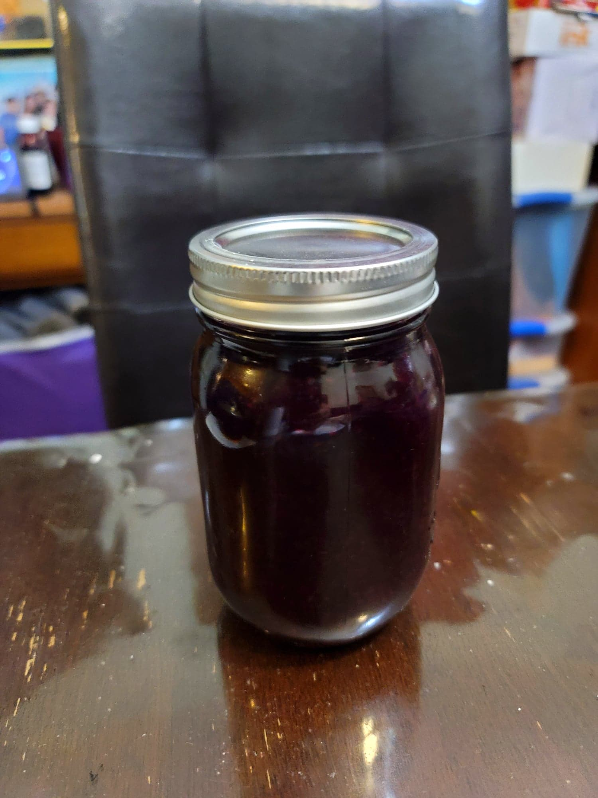

Blueberry-Raspberry-Bergamot Spoon Sweet

Ingredients:
- 2 cups (~1 lb) Blueberries
- 2 cups (~1 lb) Raspberries
- 2-3 tbsp Wild bergamot, chopped
- 1/4 cup Maple syrup or Honey, or to taste
Instructions:
- Place all the ingredients into a covered saucepan and bring to a simmer over medium. Then remove the cover and mash the berries.
- Reduce the heat to a low simmer and cook uncovered, stirring often, until the mixture is thick enough to coat the back of a spoon. It should be reduced to about 2 cups. Transfer to a jar. Serve immediately or store in the fridge.